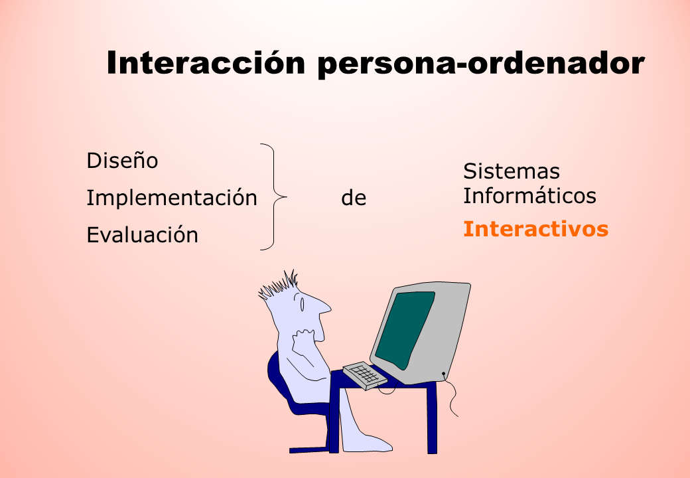

Interfaz de Usuario
¿Que es la interfaz de usuario o UI?
La interfaz de usuario o user interface (UI) engloba los recursos, sistemas y metodologías que facilitan la interacción de las personas con ordenadores o máquinas.El objetivo de su desarrollo es que el usuario puede comunicarse con la máquina de la forma más sencilla e intuitiva posible.
Su importancia
Sea quien sea el usuario o consumidor, está claro que, cuanto más intuitivo y accesible sea el diseño, mucho mejor. Esto es así hasta en el caso de enviar un correo electrónico bien representado gráficamente.En los elementos para el diseño de páginas web y productos digitales la intuitividad debería ser objeto de estudio cada cierto período de tiempo. Los tiempos cambian, y los perfiles de usuarios y las tecnologías también.
El objetivo de casi cualquier software o página web suele ser vender, generar nuevos clientes o mantener a los que ya lo son. Así que, en los casos en los que el diseño queda obsoleto, hay que hacer un rediseño UI adaptando los elementos.
Aunque a veces, nuevas técnicas y avances hacen que sea más recomendable desechar lo anterior por completo y crearlo de nuevo desde 0.
La interfaz de usuario (UI) y su importancia en el diseño. Ingenio Virtual. Recuperado de: https://www.ingeniovirtual.com/la-interfaz-de-usuario-ui-y-su-importancia/

Interacción usuario ordenador
¿Que es interacción usuario ordenador?
La interacción persona-ordenador (IPO), también conocida como Human-Computer Interaction (HCI) o Computer-Human Interaction (CHI), es la disciplina dedicada a estudiar cómo se produce la interacción entre las personasy los sistemas informáticos para tratar de mejorar esta relación por medio del diseño gráfico.
Su objetivo principal es incrementar la productividad de los equipos y minimizar los errores al tiempo que se dota a los usuarios de una experiencia segura, confortable y satisfactoria.
Interacción persona-ordenador (IPO). Eniun. Recuperado de: https://www.eniun.com/interaccion-persona-ordenador/
MOCKUP